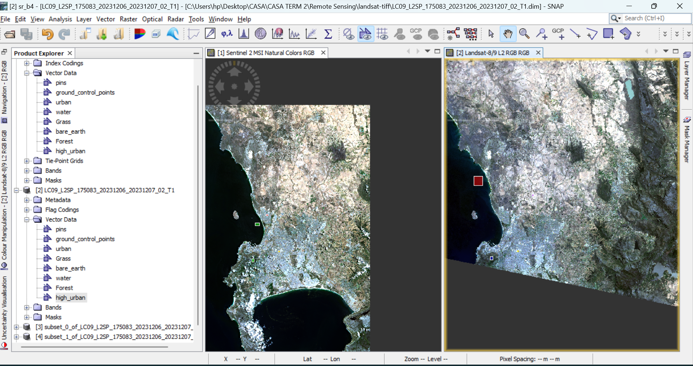

1 An Introduction to Remote Sensing
1.1 Summary
CASA0023 Remotely Sensing Cities and Environments is about remotely sensed earth observation(EO) data to make some informed decisions on environmental hazards arising from changing climate.
What is remote sensing?
According to NASA, Remote Sensing is acquiring information from a distance. The data collection may take place directly in the field (in-situ or in-place data collection), and/or at some remote distance from the subject matter known as Remote Sensing of the environment.
Example- the study of daily weather and climate change, land-use/land cover monitoring, food security, military reconnaissance, and many others.
The majority of remotely sensed data are analyzed using digital image processing techniques. A very interesting fact about remote sensing image interpretation is that it is both an art and a science.

Space junk, or space debris, is any piece of machinery or debris left by humans in space. It can refer to big objects such as dead satellites that have failed or been left in orbit at the end of their mission.
Spectral Resolution is the number and dimension (size) of wavelength intervals (referred to as bands or channels) in the electromagnetic spectrum to which a remote sensing instrument is sensitive.
Spatial Resolution is a measure of the smallest angular or linear separation between two objects that can be resolved by the remote sensing system.
Temporal Resolution The temporal resolution of a remote sensing system generally refers to how often and when the sensor records imagery of a particular area.
The Hot topics being discussed around the world like urban green space and accessibility, Illegal logging, Forest Fire, and temperature studies.
Different types of satellite imagery-
Sentinel 2 -The main advantage of Sentinel 2 over Landsat 8 is its higher resolution (across most bands, it has higher spatial resolution, its revisit time is shorter, and it has more spectral bands). However, Landsat 8 has thermal infrared bands, which means that it can be used to measure temperature.
Landsat 8 –its history like the origin of satellite imagery USGS -Landsat 8 has a mission to collect global data and give scientists the ability to access changes in Earth’s landscape.
Remote sensing is performed using an instrument, often referred to as a sensor.
Sensors
Passive sensors record electromagnetic radiation that is reflected or emitted from the terrain. For example, cameras and video recorders can be used to record visible and near-infrared energy reflected from the terrain.
and Active sensors such as microwave (RADAR), LiDAR, or SONAR, bathe the terrain in machine-made electromagnetic energy and then record the time-lapsed amount of radiant flux scattered back toward the sensor system.
Remote sensor data are collected passively (e.g. digital cameras) or actively (e.g., RADAR, LiDAR) using analog or digital remote sensing instruments.
Atmospheric scattering
- Atmospheric scattering causes the colors we see in the sky due to sunlight interacting with particles in the atmosphere.
- Rayleigh scattering explains how light interacts with small particles, resulting in blue skies during the day.
.jpg)
This week practical we did play with Sentinel and Landsat imagery and compared it with different classes like urban, grass, bare-earth. We compare the spectral signatures from both. we do this by generating point of interest (POIs) matches with both images.

1.2 Application
Remote sensing plays a crucial role in modern agriculture by providing data-driven insights. It aids in recent yield estimation,facilitates monitoring crop health and development, Detecting infestations remotely.(Shah et al. 2023). Despite advancements in sensor technologies, the agricultural sector faces knowledge gaps regarding the sufficiency, appropriateness, and techno-economic feasibility of remote sensing (RS) technologies.
Further improving the use of remote sensing and making it more effective can be seen in this paper which presents a method using optical remote sensing and machine learning (decision trees and random forests) to map cropland, cropping patterns, and crop types. It outlines steps including preprocessing, model training, and validation. While effective, considerations include algorithm justification, robust accuracy assessment, and ensuring applicability across regions. It is important to generalize it and use the ground truth data for credibility and application of methodology.(Tariq et al. 2023)
1.3 Reflection
When I think about remote sensing the first thing that comes to my mind is high-resolution images captured by satellites and we humans working on it. Be it land, water, and events like fire, floods, earthquakes, any natural disaster, or man-made disasters like war which includes bombing and destruction of houses. Everything can be recorded, and we can study it, and be aware of it for the future. It’s just like magic. Last week in the Big Data class I was fascinated to see how daily images of Gaza were available and we can see how much destruction has happened or is happening. Remote sensing gives you time-series data through which we can tell how the place has changed in all these years. How many buildings got demolished, how many trees were cut down, and how many new buildings were constructed? In my past life, I have used remotely sensed data to classify land use land-cover and generate environmental impact assessment reports for work. We also studied atmospheric correction which sounds similar to something we did in our GIS class last term. The imagery downloaded can be cleaned just like we clean data or use .csv or .shp files for GIS work. We can remove all the bad layers. Run the software as many times to get the best clean image. It’s like removing all the NaNs. To conclude in more general terms the entire industry is dependent on high-resolution satellite imagery and open-source applications like Google Earth Engine, Google Maps, open-street maps.